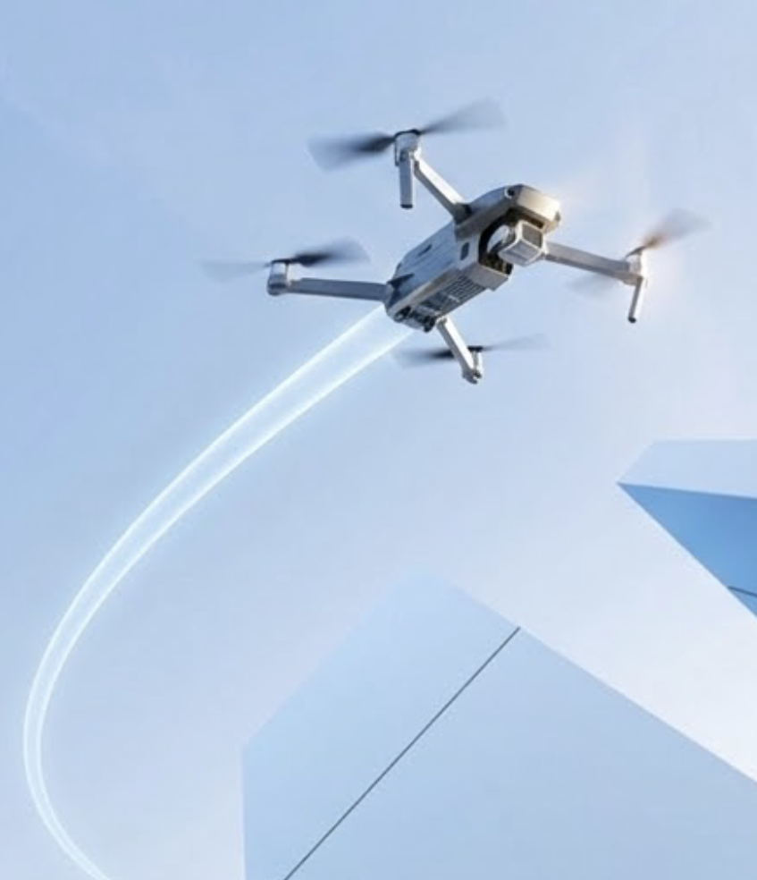
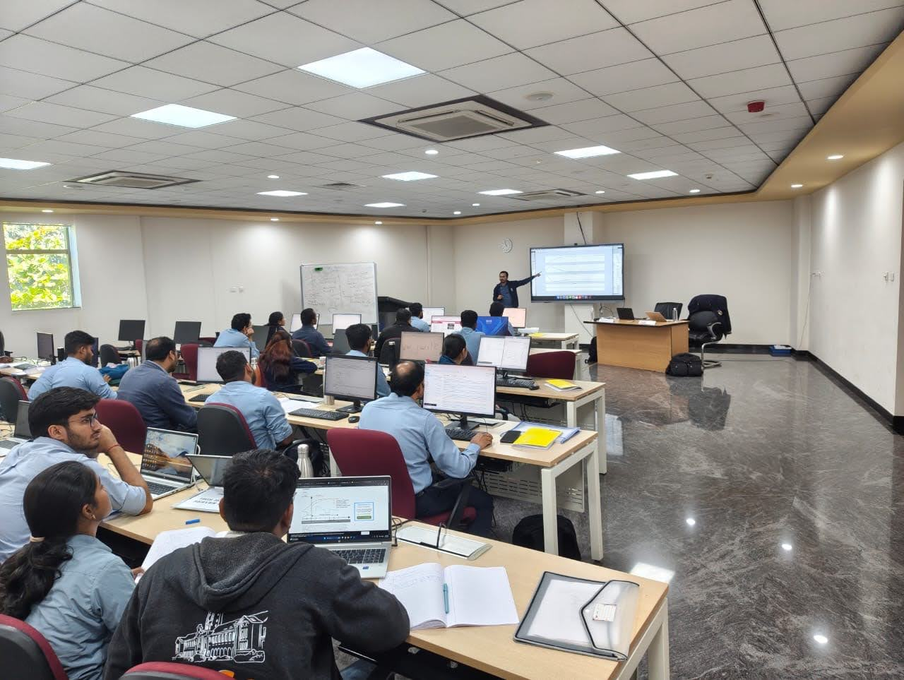
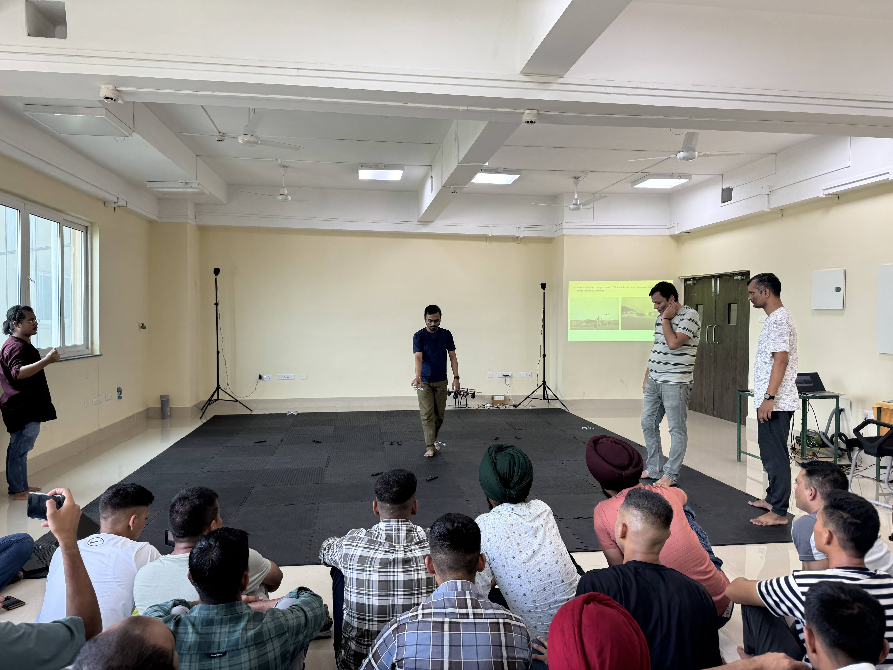

Research Summary
Unmanned Aerial Vehicles (UAVs), commonly known as drones, are powerful tools but come with a key limitation — they can only stay in the air for a short time due to high energy consumption. My research focuses on finding smarter ways to make quadrotor drones more energy-efficient and extend their flight time. To tackle this, my research group and I have developed methods that help drones obtain more efficient paths while also tuning how they are controlled during flight. In simple terms, we find energy optimal paths and design controllers to help follow that path with minimal energy by optimizing both aspects side-by-side. Through simulations, we have found that our approach can reduce energy usage by up to 70% compared to conventional planning and control methods. This can significantly improve the practical usability of drones in real-world applications.

Research Interests
- Optimal Control
- Optimization
- Model Predictive Control
- Reinforcement Learning
- Robotics and Autonomous Systems
Selected Publications
Find my complete list of publications on Google Scholar
Research Workshops / Talks
Dec 2025
Multicopter Design and Control
Bharat Electronics Limited
BEL Academy for Excellence (Nalanda), Bangalore, India

Nov 2025
On controller tuning for drones
Indian Army
CoRE Lab, Indian Institute of Technology Guwahati, India
